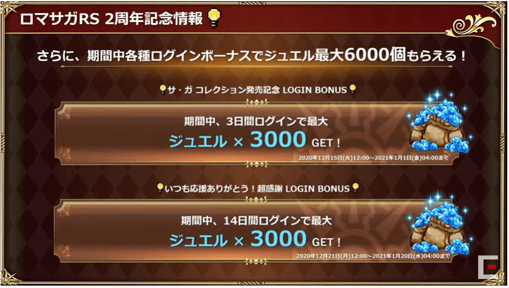
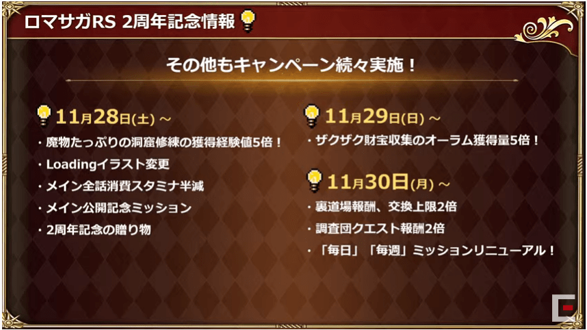

『ロマンシング サガ リ・ユニバース』2周年祭 公式生放送 まとめ
ホーム > ロマサガＲＳ > 生放送index > 2周年祭 公式生放送動画
生放送のお品書き
1.18.0アップデート情報
1.18.0について

ギルドアップデート
LINEスタンプ販売
スタートダッシュミッション
遠征先「水中」追加
お気に入り防具登録機能
フィルタ追加、一部装備品入手時ロック
エリア解放演出スキップ
鉄人追加
ショップラインナップリニューアル
クレジットの追加
2周年イベント情報
2周年記念聖なる世界塔へ！
ガチャ630連無料
イラスト
ストーリー
ログインボーナス

ミッション報酬
財宝の大穴
過去イベントスタイルレアドロップ
第一弾
第二弾
第三弾
イベント「迷いの世界塔」
イベント「指輪の試練」
新ガチャ「SSジョー、グゥエイン、ドーラ」
復刻ガチャ
有償ガチャ
ジョーガチャ（フェス限復刻ガチャ）
育成応援キャンペーン
練達
R杯交換所リニューアル
その他キャンペーン

ジュエルセール
配信記念ジュエル配布
アンケート実施
お知らせ
卓上カレンダー
イトケンさん作曲家30周年記念ライブ
イトケンさん無観客での配信ライブ実施(2021/1/31)
公式サイト
サガコレ
サガ30周年記念BOX：神
サガクロニクル
ロマサガ3セール
11/30まで
サガカフェ
ロマ佐賀マンホールスタンプラリー
有田焼 陣形皿
SaGa THE STAGE配信中
市川さん・島崎さんセレクトプレイリスト公開中
LINEスタンプ
インサガ情報
コラボウイスキー